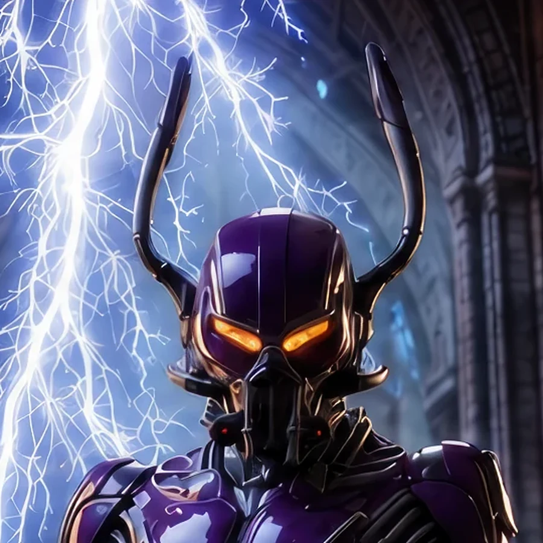
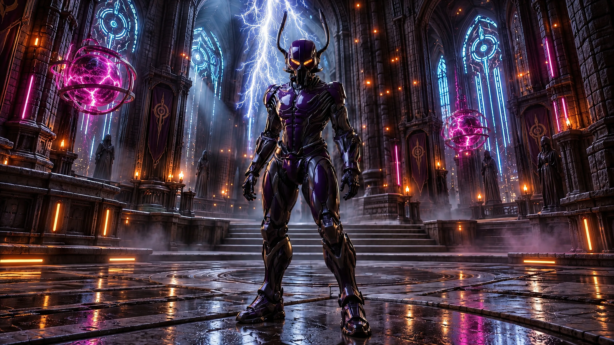
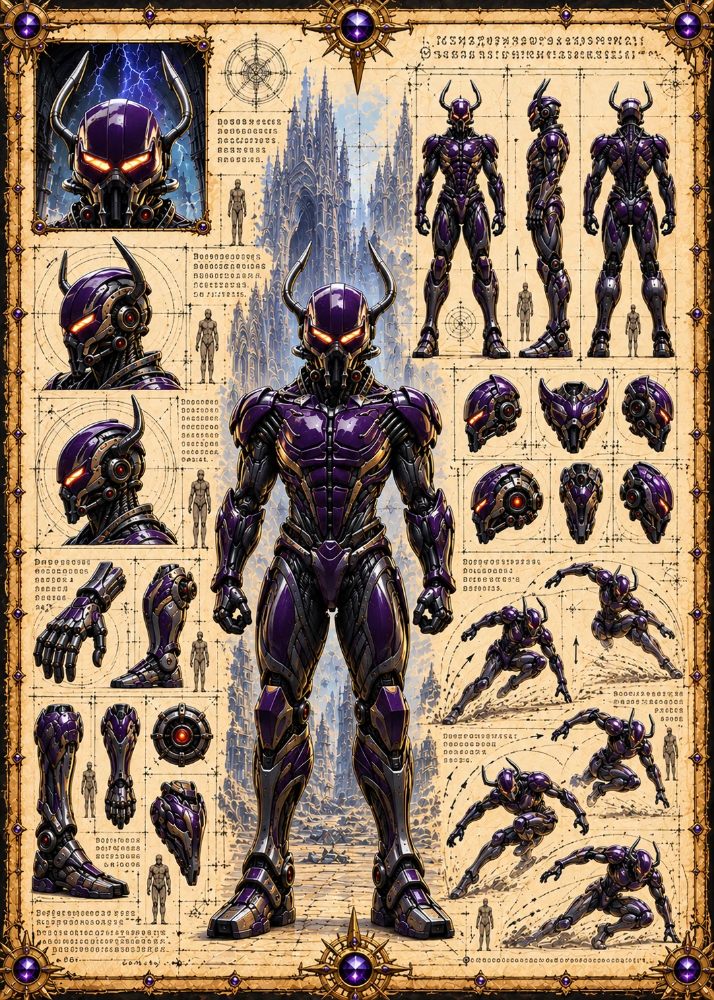

Field Observation
Quora investigates the conspicuous pink signal orbs positioned to the left and right. The paired orbs may form an alien checkpoint within Earth 1's city.
 ©
©
GENEZYS ARCHIVE · EARTH 1 · Legionnaire
Fabric Render
Identity & combat record
Archive node 01 / 05

Archive record
Quora tears through existence as easily as through sailcloth. The Planar Rend empties one enemy's energy while another takes the blow. Among the North Marauders, Quora is loud, proud, and the first to volunteer for every rift.
Combat signature
Tears hole through existence: Sets the target's Cosmara to 0 for 1 round. Deals 140 damage to a different enemy.
Genezys 09:05 ™&©2026LEGIONS
Recovered visual record
Archive node 02 / 05

Full frame available // rotate device to landscape
Technical archive
Archive node 03 / 05

Classified field intelligence
Archive node 04 / 05
FIELD REPORT // ALIEN ORB ARRAY
Field Observation
Quora investigates the conspicuous pink signal orbs positioned to the left and right. The paired orbs may form an alien checkpoint within Earth 1's city.
Environment
Object Analysis
Key Findings
Motion archive
Archive node 05 / 05
Motion record not yet recovered